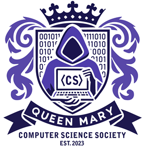
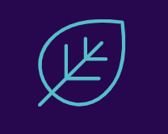
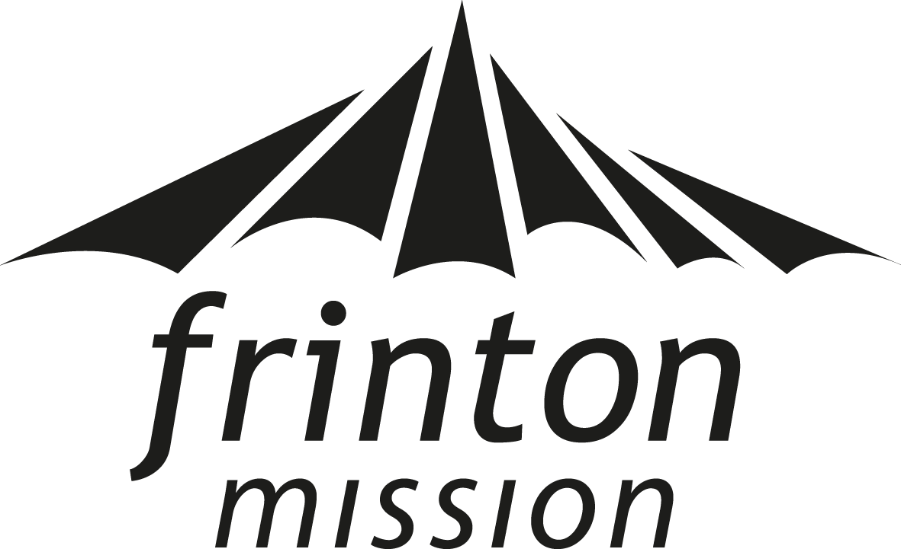

Nice to meet you.
I'm a Computer Science undergraduate at Queen Mary University of London with a passion for using technology to create positive social impact. My interests include fintech, networking, cybersecurity, web technologies and software development, and I'm always looking for opportunities to apply what I learn to real-world problems.
Experience
Student Ambassador
Queen Mary, University of London - London, UK
September 2026 -
- Represent the School of Electronic Engineering and Computer Science at university outreach and recruitment events.
- Support prospective students through campus tours, UniBuddy conversations and promotional activities.
- Create digital content, including videos and written testimonials, to showcase the student experience.

Social Media Manager
Queen Mary Computer Science Society - London, UK
June 2026 -
- Manage the society's social media platforms by creating graphics and promotional content for events.
- Coordinate with committee members to publish updates and increase student engagement.
- Respond to student enquiries online while helping shape the society's marketing strategy.
Spring Week Intern - Business Placement
British Airways - London Heathrow (LHR)
April 2026
- Explored commercial strategy, terminal operations and revenue management within a global airline.
- Collaborated with a multidisciplinary team to develop solutions to improve the customer experience.
- Presented recommendations to a panel, strengthening my communication and presentation skills.

Website, Systems and Social Editor
Moorland View Care Home - Remote
April 2020 - December 2023
- Supported the organisation's digital transformation by developing a new website and introducing cloud-based systems.
- Managed the care home's website, social media and digital communications, particularly during the COVID-19 pandemic.
- Improved operational efficiency by supporting staff with new digital tools and collecting customer feedback through online surveys.
Volunteering

Youth Venue Team Member
Frinton Mission - Frinton-on-Sea, UK
July 2026
- Supported youth sessions and events, supporting the planning and delivery of activities for children and young people.
- Responsible for safeguarding, safety, and creating an inclusive environment for participants.
- Facilitated small group discussions, developing communication and mentoring skills.
- Collaborated with a volunteer team to organise events and manage activities effectively.
💻 What am I currently up to?
I have just finished my first year of university and am spending the summer working on a number of web design and digital projects for organisations. I'm also preparing for my second year, where I'll continue my role as Social Media Officer for the Queen Mary Computer Science Society and work as a Student Ambassador for the School of Electronic Engineering and Computer Science. Outside of technology, I enjoy travelling, running and learning languages, and I'm hoping to volunteer with local youth groups during the summer.
Presenting at the Festival of Education
Queen Mary Academy - July 2026
I was invited to co-present a mini-keynote at the Queen Mary Academy Festival of Education, where I shared the student perspective on a project investigating the use of gamification and learner engagement analytics in higher education through the Level Up XP plugin. Working alongside academic staff, I discussed how the initiative has influenced my own learning experience and engaged with educators interested in improving student participation across different disciplines. It was an invaluable opportunity to represent the student voice while developing my public speaking and communication skills. Since the event, I have also supported the training programme, by creating a short clip introducing the Level-up plugin for educators.
🌍 What's my background?
Coming from a British and Bulgarian background, I’ve always been interested in different cultures, languages, and perspectives. I’m currently studying Computer Science at Queen Mary University of London, where I’m passionate about using technology to solve problems and build solutions that have a positive impact.
🛠️ What technologies do I enjoy working with?
I'm most experienced with Java, alongside HTML, CSS, JavaScript and PHP, with additional experience in Python. I enjoy building websites and software projects and am always looking to learn new technologies and improve my skills. My interests include:
- Fintech
- Networking
- Cybersecurity
- Web Development
- Software Engineering
- Digital Transformation